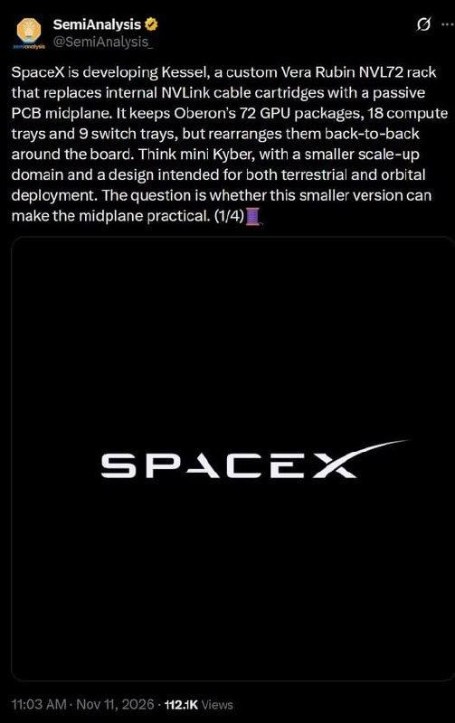

過去 26 小時共 2 則貼文，講的是同一件事：SpaceX 自己設計的 AI 機櫃「Kessel」。一則是股癌整理的規格清單，一則是 SemiAnalysis 推文截圖。沒有業配或集數推播。
#6550 原文
謠傳已久的 kessel 寫出來，大概談一下自己了解的 spec
- Compact NVL72，先地面、後太空，針對推論為主
- 機櫃尺寸 約 1.0 m × 0.5 m × 0.4 m
- tray 數眾說紛紜，目前看 18 compute tray, 9 switch tray
- 正面 5/4/5（compute/switch/compute），背面 4/5/4
- M10+Q-glass, 中板用 amphenol palandin
- Compute tray 為 Strata 架構的單片式主板，4G2C、SOCAMM、8 顆 E1.S、BMC、5 顆 MCU、2 OSFP、1 RJ45
- CX-9 數量每 tray 9 顆
- Scale-out 頻寬每顆 Rubin 800G，低於標準版
- Switch tray 沿用現有 Rosalind NVLink switch 重新封裝，每 tray 4 顆 QM4，加 x86 COMe、BMC
- NVLink SerDes 改跑單工，TX、RX 各走一對線，scale-up 頻寬只有標準版一半
- 高壓板把 400VAC 轉成 12VDC（compute）與 54VDC（switch），用 Molex Sentrality 連接
- 散熱為單片式冷板
#6551 原文（無文字，只有圖片）

圖為 SemiAnalysis 於 2026-11-11 發的推文（串文 1/4，11.2 萬次瀏覽）：SpaceX 在開發 Kessel，一款客製化的 Vera Rubin NVL72 機櫃，用被動 PCB 中板（midplane）取代內部的 NVLink 銅纜卡匣；保留 Oberon 架構的 72 顆 GPU 封裝、18 個 compute tray、9 個 switch tray，但改成前後背對背排在中板兩側，可視為「迷你 Kyber」，要同時用於地面與軌道。推文最後提出疑問：縮小版能否讓中板設計變得可行。
講解
背景：NVL72 是什麼。NVIDIA 的 NVL72 是一整個機櫃當一台電腦：72 顆 GPU 透過 NVLink 互聯成一個「scale-up」網域，彼此像共用記憶體般高速溝通；機櫃之間再用 InfiniBand／乙太網路「scale-out」。標準版（Oberon 機櫃）中，compute tray 和 switch tray 之間靠背後成束的銅纜卡匣連接。下一代 Kyber 則打算改用直插式 PCB 中板，省掉線纜、提高密度，但需要極多層、極高階材料的板子，製造難度很高。
Kessel 的做法。依 SemiAnalysis 公開內容，SpaceX 走的是「縮小版 Kyber」：GPU 數維持 72 顆（Kyber 規劃是 144 顆），把 tray 背對背插在一片被動中板上。報導引述中板約 84 層、用 M10 等級材料（先前 Kyber 規劃為 156 層 M9）——層數少比較做得出來，但需要更高等級的低損耗材料。股癌寫的「M10+Q-glass」（Q-glass 是石英玻纖布，介電損耗更低）與此方向一致。另一個重點是供應鏈：SpaceX 只向 NVIDIA 買晶片封裝，主板與其他硬體自己設計、自己找供應商，等於繞過 NVIDIA 提供的 L6 compute board，這對原本做 NVIDIA 標準主板與機櫃的 ODM 是潛在變數，對 PCB／CCL、連接器（Amphenol、Molex）則是新的規格機會。
為什麼頻寬打折。股癌列出 scale-up 頻寬只有標準版一半（SerDes 單工）、scale-out 每顆 800G 也較低，並說定位是「推論為主」。推論比訓練不那麼依賴超大頻寬的 GPU 間同步，犧牲頻寬換取較小體積、較低功耗與較簡單的走線，對要上太空、重量與散熱受限的場景合理。高壓板直接把 400VAC 降到 12V／54V、單片冷板散熱，也都是精簡化的方向。
查證與保留。SemiAnalysis 公開推文與媒體轉述可對上的部分：72 GPU、18 compute／9 switch tray、被動 PCB 中板、地面與軌道兩用、M10 材料。股癌清單中其餘細節——機櫃尺寸、5/4/5 排列、Amphenol 中板、CX-9 每 tray 9 顆、800G、SerDes 單工、Molex 電源連接、Rosalind／QM4 等——在公開報導中查不到，應屬 SemiAnalysis 付費內容或供應鏈說法，股癌本人也說「眾說紛紜」「自己了解的」，請當作未證實資訊。SemiAnalysis 本身也把「縮小版能否讓中板實用」列為未解問題；報導另提到 SpaceX 的 AI 擴張受電力限制，已確認的供電低於資料中心需求。